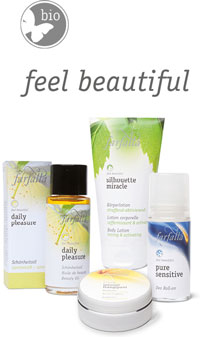

Farfallan luonnonkosmetiikkaa tuo maahan
Auringosta
Itään, Kuusta Länteen Tukku
Näillä sivuilla esitellään Farfallan huippulaatuista sveitsiläistä luomukosmetiikkaa.
Kaikilla Farfallan tuotteilla on NaTrue -tai BDIH -sertifikaatti ja ne on valmistettu 100% luonnollisista aineista. Suuressa osassa tuotteita luomuprosentti on yli 95%.
Viehättävä kivijalkakauppamme sijaitsee Helsingin Viiskulmassa. Siellä on esillä Suomen laajin valikoima Farfallan laadukasta luomukosmetiikkaa. Yhteystiedot löydät alta.
Farfallan tuotteita voi ostaa myös verkkokaupastamme osoitteessa auringostaitaan.fi
Jo vuodesta 1998 alkaen olemme tuoneet maahan tuotteita, jotka ovat laadukkaita, kauniita ja eettisesti kestävästi valmistettuja.
Yritysasiakkaille
Jos olet kiinnostunut ryhtymään Farfallan jälleenmyyjäksi, tai muuten haluat tietää lisää tästä huippulaatuisesta luomukosmetiikasta, ota meihin yhteyttä. Farfallan jälleenmyyjinä on monia ekokampaamoja ja -kauneushoitoloita ympäri Suomen. Koko maahantuomamme Farfalla-valikoima on esillä liikkeessämme, tervetuloa tutustumaan!Halutessasi voit ostaa Farfalla-tuotteita suoraan verkkokaupastamme, osoitteessa tukku.auringostaitaan.fi. Saadaksesi käyttäjätunnuksen tukun nettikauppaan ota yhteyttä sähköpostilla: tukku@auringostaitaan.fi.
Liikkeemme
Auringosta Itään, Kuusta Länteen
Fredrikinkatu 19 (Viiskulma), Helsinki
puh 09- 621 7001
verkkokauppa auringostaitaan.fi
sähköposti: info@auringostaitaan.fi
Fredrikinkatu 19 (Viiskulma), Helsinki
puh 09- 621 7001
verkkokauppa auringostaitaan.fi
sähköposti: info@auringostaitaan.fi
Tukku
Auringosta Itään,
Kuusta Länteen Tukku
sähköposti: tukku@auringostaitaan.fi
puhelin: 040 146 1222
Fiskarsintie 513, 10480 Antskog
Kuusta Länteen Tukku
sähköposti: tukku@auringostaitaan.fi
puhelin: 040 146 1222
Fiskarsintie 513, 10480 Antskog

Farfallan toiminta on todellisesti eettistä.
Farfalla mm. toteuttaa hyväntekeväisyysprojekteja ja pitää huolta viljelijöistään.
Lue lisää
Maahantuonti ja lisätiedot Auringosta Itään, Kuusta Länteen Tukku Yhteystiedot
Maahantuonti ja lisätiedot Auringosta Itään, Kuusta Länteen Tukku Yhteystiedot